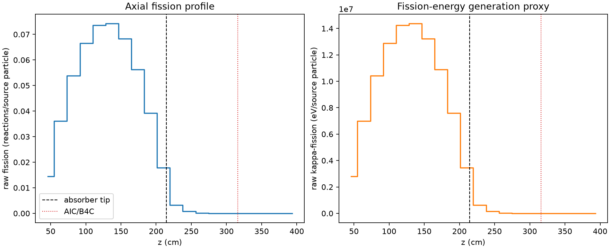
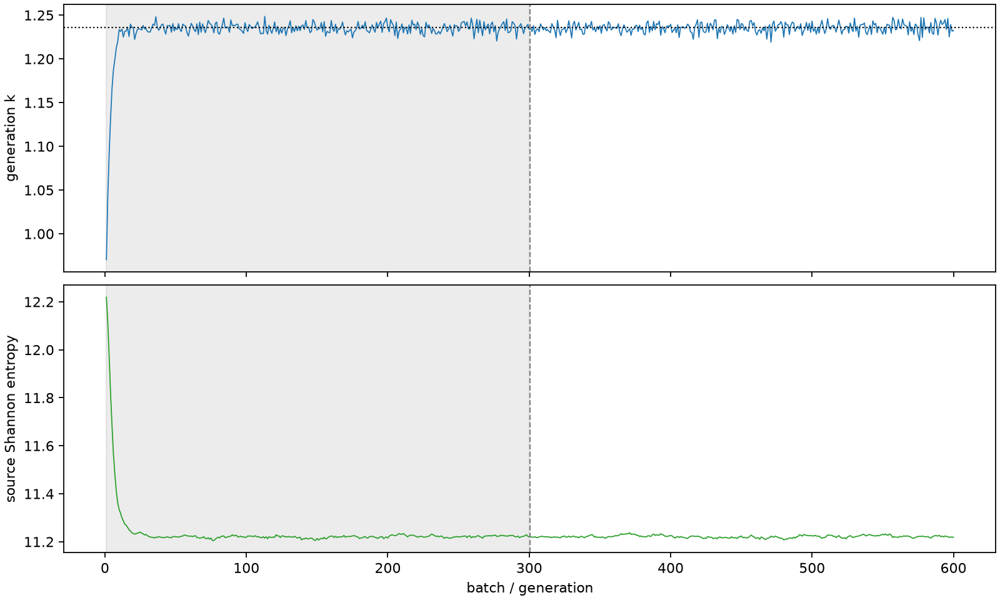

| field | value |
|---|---|
| experiment | V2-STAGE_256_OGRENCI_04-0014 |
| k | 1.2355269355298988 |
| MC standard error | 0.00019100197423333395 |
| seconds | 1058.8347107700029 |
| acceptance | not_assessed |
| convergence | review_required |
Completed is output integrity only; physical and statistical review required. Zero tallies do not prove zero production or zero uncertainty.
| diagnostic | value |
|---|---|
| geometric fuel voxels | 5280 |
| zero fission tally voxels | 868 |
| low signal fuel voxels | 1814 |
| low signal fission share | 8.409844386701426e-05 |
| low signal kappa share | 8.413378249046996e-05 |
| important fission share | 0.9500185349171627 |
| previous filter included | 3466 |
| duration estimate s | 1562.5173488400023 |
| actual minus estimate s | -503.6826380699995 |
| fission relative MC error | statistics |
|---|---|
| all_geometric_fuel | {"voxels": 5280, "positive_mean_voxels": 4412, "zero_mean_voxels": 868, "undefined_relative_error_voxels": 868, "median": 0.011516576401771946, "p95": 0.9087922473605963, "maximum": 1.0000000000000002} |
| low_signal | {"voxels": 1814, "positive_mean_voxels": 946, "zero_mean_voxels": 868, "undefined_relative_error_voxels": 868, "median": 0.55790716973242, "p95": 1.0, "maximum": 1.0000000000000002} |
| important_95pct | {"voxels": 2279, "positive_mean_voxels": 2279, "zero_mean_voxels": 0, "undefined_relative_error_voxels": 0, "median": 0.006568504354503304, "p95": 0.01137861340836651, "maximum": 0.014595061816798677} |
| outside_previous_filter | {"voxels": 1814, "positive_mean_voxels": 946, "zero_mean_voxels": 868, "undefined_relative_error_voxels": 868, "median": 0.55790716973242, "p95": 1.0, "maximum": 1.0000000000000002} |
| kappa_fission relative MC error | statistics |
|---|---|
| all_geometric_fuel | {"voxels": 5280, "positive_mean_voxels": 4412, "zero_mean_voxels": 868, "undefined_relative_error_voxels": 868, "median": 0.011502897656580186, "p95": 0.9084556467655425, "maximum": 1.0000000000000002} |
| low_signal | {"voxels": 1814, "positive_mean_voxels": 946, "zero_mean_voxels": 868, "undefined_relative_error_voxels": 868, "median": 0.55730612444186, "p95": 1.0, "maximum": 1.0000000000000002} |
| important_95pct | {"voxels": 2279, "positive_mean_voxels": 2279, "zero_mean_voxels": 0, "undefined_relative_error_voxels": 0, "median": 0.0065614692624318014, "p95": 0.011365467321926358, "maximum": 0.014579323199370746} |
| outside_previous_filter | {"voxels": 1814, "positive_mean_voxels": 946, "zero_mean_voxels": 868, "undefined_relative_error_voxels": 868, "median": 0.55730612444186, "p95": 1.0, "maximum": 1.0000000000000002} |
| axial bin | fission share | kappa-fission share |
|---|---|---|
| 1 | 0.028787174748653242 | 0.028788418894154635 |
| 2 | 0.07147522784162977 | 0.07147489663261532 |
| 3 | 0.10673372294175015 | 0.10673288142778126 |
| 4 | 0.13183608774601635 | 0.13183487102502367 |
| 5 | 0.14572934511294428 | 0.14572839399376153 |
| 6 | 0.14708312975306223 | 0.14708186472874527 |
| 7 | 0.13532278287444083 | 0.13532185731818422 |
| 8 | 0.11163290867491771 | 0.1116323294115684 |
| 9 | 0.07766470565956882 | 0.0776641564631756 |
| 10 | 0.03533386169775464 | 0.03533572675137809 |
| 11 | 0.006521219488390485 | 0.006523961942785535 |
| 12 | 0.0014538935475977264 | 0.0014545039854840147 |
| 13 | 0.0003320109068918408 | 0.00033216783099346525 |
| 14 | 7.564495003113374e-05 | 7.567758270165117e-05 |
| 15 | 1.465103334380451e-05 | 1.4657979218974578e-05 |
| 16 | 3.242085748866264e-06 | 3.24241194883974e-06 |
| 17 | 2.8581101858659073e-07 | 2.865544095341126e-07 |
| 18 | 1.046982015468164e-07 | 1.0463855123044494e-07 |
| 19 | 4.280379547508092e-10 | 4.2751883815235013e-10 |
| 20 | 0.0 | 0.0 |
Histories include the inactive-to-active transition at batch 300. kappa-fission approximates fission energy production, not total heat deposition.

